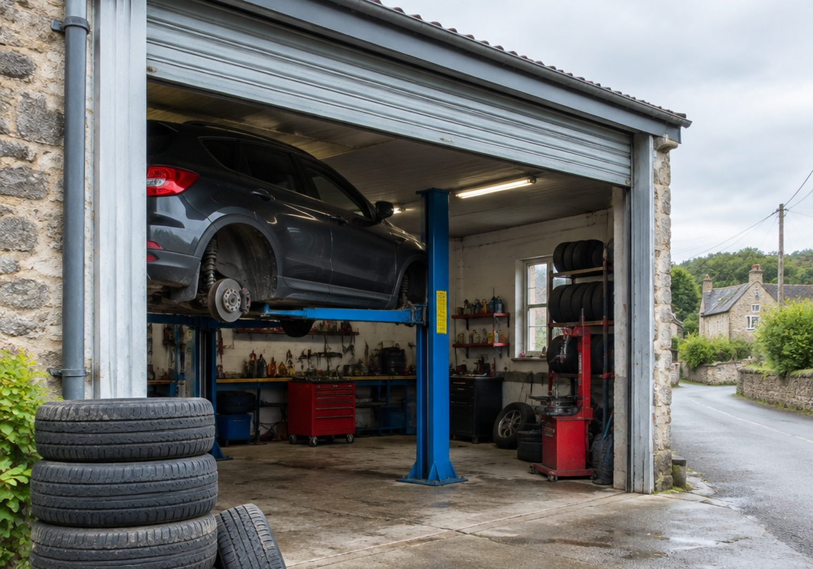

Шиномонтаж
под Брестом —
без очередей
Переобувка, балансировка, ремонт прокола. 11 км от Бреста, деревня Каменица-Жировецкая. Приезжайте — машину берём сразу.
Услуги
Что делаем
Всё, что нужно колесу: снять, разбортировать, отбалансировать, поставить и проверить давление.
Переобувка комплекта
Снятие колёс, демонтаж и монтаж шин, установка на автомобиль, протяжка крепежа. Летний комплект на зиму и зимний на лето.
Балансировка
Балансировка каждого колеса на станке с установкой грузиков. Без неё на скорости появляется вибрация на руле и полу.
Ремонт прокола
Жгут, грибок или заплатка изнутри — зависит от повреждения. Сначала смотрим, что именно пробито, потом говорим, что делаем.
Проверка давления
Проверка и подкачка до нормы по марке авто, осмотр протектора и боковины. Заодно видно, пора ли менять шины.
Сезонная переобувка
Пик — ноябрь и апрель. Записывайтесь заранее: в эти недели очередь может быть даже там, где её обычно нет.
Шины и диски
Работаем с обычными и литыми дисками, следим за посадочным местом и вентилями. Что не берёмся делать — скажем сразу.
Почему сюда
Шесть причин
заехать
Сервис во дворе, без вывески на центральной улице — и без наценки за неё.
Рядом с Брестом
11 км от города: ближе, чем ехать в центр и стоять в очереди на городском шиномонтаже.
Без очередей
В обычные месяцы машину берут сразу. В ноябре и апреле лучше записаться заранее.
Комплект за визит
Снятие, монтаж, балансировка и установка — за одну поездку, без «приезжайте завтра за второй парой».
Литые диски
Работаем аккуратно с литьём: посадочное место, момент затяжки, состояние вентилей.
Честный вердикт
Если порез на боковине или шина не ремонтируется — скажем прямо, а не «сделаем и посмотрим».
Один телефон
Звонок и WhatsApp на одном номере: пишите, если так проще, ответим по времени и работе.
Сезон · интерактив
Когда ехать
Выберите месяц: покажем, чего ждать по загрузке и что советуем сделать именно в это время.
Январь: спокойно
Зима в разгаре. Обычно спокойно: люди приезжают с проколами и проверкой давления после морозов.
Если шины спускают за ночь — приезжайте, жгут занимает минуты, а ездить на приспущенном колесе дороже.
Запись · интерактив
Запрос на время
Соберите сообщение за десять секунд: услуга, день, время, автомобиль.
Запрос на время
—
Выберите день, время и услугу — соберём сообщение в WhatsApp. Это запрос, а не бронь: время подтвердим по телефону или в переписке.
Отправить запрос в WhatsAppВ сезон (ноябрь и апрель) свободных окон меньше: чем раньше напишете, тем выше шанс выбрать удобное время.

Порядок
Как проходит
визит
Четыре шага: от звонка до проверки давления. Если во время работы выяснится, что шина не ремонтируется, скажем до того, как сделаем лишнее.
Подробнее об услугахЗвонок или сообщение
Марка авто, размер шин и что нужно. Этого достаточно, чтобы назвать время и ориентир по работе.
Приезд
Снимаем колёса, смотрим состояние шин и дисков, говорим, что именно делаем.
Работа
Демонтаж, монтаж, балансировка, установка, протяжка крепежа и проверка давления.
Проверка
Показываем, что сделано, и говорим, за чем следить: давление, протектор, вентили.
Работы
Рабочее место


Фотографии демонстрационные: показывают вид работ. Пришлите свои снимки сервиса и я поставлю их вместо этих.
Как добраться
д. Каменица-Жировецкая, 25/6
25/6, деревня Каменица-Жировецкая, Мухавецкий сельсовет, Брестский район, Брестская область
От Бреста — 11 км. Ориентир — сама деревня Каменица-Жировецкая; если не находите въезд, звоните, подскажем по телефону.
Вопросы
Спрашивают чаще
Нужно ли записываться
В обычные месяцы — нет, приезжайте: машину берут сразу. В ноябре и апреле запись экономит вечер: это пик переобувки.
Что сказать по телефону
Марку авто, размер шин (например, 205/55 R16) и что нужно: переобувка, балансировка, прокол. Этого хватит, чтобы назвать время.
Сколько стоит
Цена зависит от диаметра колеса и от того, снимаются ли шины с дисков. Точную сумму скажем по телефону — публиковать «среднюю» цену нечестно.
Ремонтируете ли боковые порезы
Нет, боковой порез — это небезопасно. По протектору смотрим: жгут, грибок или заплатка изнутри, в зависимости от повреждения.
Можно ли приехать на двух колёсах
Да, но большинство работ удобнее делать комплектом: так и время короче, и балансировка ровнее.
Есть ли сезонное хранение шин
Этот вопрос уточните по телефону: не хотим обещать то, чего может не быть.
Проще всего — позвонить: по размеру шин и услуге сразу скажем время и стоимость.
Заявка
Напишите,
что нужно
Марка авто, размер шин и услуга. Ответим временем и ценой.
Контакты
БУЧИК
ИП Бучик Галина Константиновна
д. Каменица-Жировецкая, 25/6, Мухавецкий сельсовет, Брестский район
Брест — 11 км. В ноябре и апреле лучше записаться: это пик переобувки.